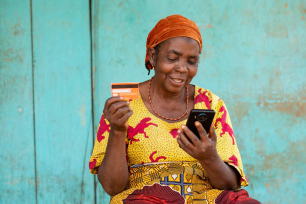

Vocational skills
A skill she can build on.
Practical training in tailoring, catering, cosmetology and other trades, with a focus on skills women can use to earn an income.
Explore programmeSkills. Strength. Sisterhood.
When a woman has the tools to thrive, a whole community grows. We help Nigerian women turn their potential into possibility.


More than a skill. A way forward.
She supports her family. She builds her confidence. She creates opportunities for others.
The Strength of a Skilled Woman Foundation is a registered Nigerian nonprofit based in Port Harcourt. Through practical training, education and business support, we help women take their next step towards independence.
“Every woman deserves the chance to discover her strength, develop her skills, and build a life of dignity and independence.”
Bertha Onyeneke · Co-Founder & TrusteePathways to possibility
Practical support for every stage of a woman’s journey, from her first lesson to her own business.
Vocational skills
Practical training in tailoring, catering, cosmetology and other trades, with a focus on skills women can use to earn an income.
Explore programmeEntrepreneurship
Business planning, pricing, mentoring and market connections to help women launch and grow their own enterprises.
Explore programmeEducation & literacy
Adult literacy and learning support for women and girls, opening doors to education, confidence and independence.
Explore programmeSmall steps. Lasting change.
Hands-on training that connects learning with everyday opportunity.
Mentoring and business guidance to help turn skills into a livelihood.
Connections, encouragement and support for the journey ahead.
 Her ambition. Our encouragement.
Her ambition. Our encouragement.
In their own words
Before I joined the Foundation's tailoring programme, I had no income of my own. I was completely dependent on my husband and felt I had no value. The training gave me a skill, yes — but more than that, it gave me confidence. Today, I run my own fashion label from home. I now take orders, employ one apprentice, and can pay my children's school fees without asking anyone. This foundation did not just teach me to sew — it taught me to believe in myself.
Tailoring Graduate — Port Harcourt
I had always loved cooking but never thought it could be a real business. The Foundation's entrepreneurship training changed everything. They did not just teach me how to cook for a crowd — they taught me how to cost a job, write a proposal, and market myself. I now supply food to three offices in my area and have employed two other women. The mentorship gave me the courage I was missing. I am proud of what I have built, and I am not done yet.
Catering Business Owner — Rivers State
I left secondary school early and for years I thought my future was limited. When I heard about the ICT and digital skills training, I was nervous — I had never used a computer properly. But the trainers were patient and encouraging. Within weeks I understood how to use basic software, manage social media, and do online transactions. I am now working as a digital assistant for a small business and earning a stable income. Education does not have an age limit, and this foundation proved that to me.
Digital Assistant — Rivers State

Make room for possibility
Help make training, mentoring and business support available to more women. Choose a programme close to your heart, or support the foundation’s wider work.
Make a donationYou can also help by sharing your time and expertise.
You have something to give
Good things happen when people bring their strengths together.
Become a volunteer trainer or mentor and help a woman take her next step.
Volunteer with usWork with us to bring training and opportunity to more communities.
Become a partnerMake a contribution towards skills, education and a more independent future.
Give todayA little support. A lasting difference.
Give your time, share your knowledge, or support a woman’s journey.